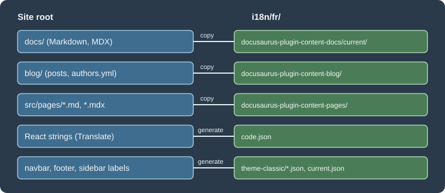

Internationalization
|
This content was generated with the assistance of AI and should be verified against the official documentation before being relied on in production. |
This page was written against Docusaurus 3.10.2 (the last release of the 3.x line) and checked on 2026-10-26. It explains how a Docusaurus site is translated: which keys declare the locales, where the translated files live, how the JSON translation files are generated, how a site is built for one or all locales, and two ways to manage the translation work (Git and Crowdin). The running example is the documentation site of Pocket Units, the small units-conversion library with a C# and a Python implementation, translated into French. Its configuration and the commands below were run with Docusaurus 3.10.2 and the output shown was read from the generated files.
What internationalization means in Docusaurus
Docusaurus does not translate text. It defines where translated files go, picks them up at build time and wires the
result into the site (language selector, lang and dir attributes, hreflang links). The official goals are a simple
setup (put the file in the right place), freedom to use any workflow (Git, a translation service, FTP), and support for
single-domain, multi-domain and hybrid deployments. The documented limits are:
-
no automatic detection of the visitor’s locale; the documentation suggests leaving that to the hosting provider;
-
no built-in translation service;
-
no translation of slugs.
Each locale is built as a separate single-page application, so the development server shows one locale at a time.
Declaring locales
Locales are declared in the i18n object of docusaurus.config.ts. Locale names decide both the folder names and the
URL prefix.
import type {Config} from '@docusaurus/types';
import type * as Preset from '@docusaurus/preset-classic';
const config: Config = {
title: 'Pocket Units',
tagline: 'Units conversion for C# and Python',
favicon: 'img/favicon.ico',
future: {v4: true},
url: 'https://docs.example.com',
baseUrl: '/',
onBrokenLinks: 'throw',
i18n: {
defaultLocale: 'en',
locales: ['en', 'fr', 'ar'],
localeConfigs: {
en: {label: 'English', htmlLang: 'en-GB'},
fr: {label: 'Français'},
ar: {label: 'العربية', direction: 'rtl'},
},
},
presets: [
[
'classic',
{
docs: {
routeBasePath: '/docs',
sidebarPath: './sidebars.ts',
editLocalizedFiles: true,
},
blog: false,
} satisfies Preset.Options,
],
],
themeConfig: {
navbar: {
title: 'Pocket Units',
items: [
{type: 'docSidebar', sidebarId: 'tutorialSidebar', position: 'left', label: 'Docs'},
{type: 'localeDropdown', position: 'right'},
],
},
} satisfies Preset.ThemeConfig,
};
export default config;Source: Docusaurus docs: i18n tutorial
The i18n keys are:
| Key | Default | Meaning |
|---|---|---|
|
none |
The locale with no prefix in its URL, the one |
|
none |
All locales deployed by the site. It must contain |
|
|
Root folder of the locale folders, absolute or relative to the config file. |
|
none |
Per-locale options keyed by locale name; locales that need nothing special can be omitted. |
The options of localeConfigs[<locale>] are:
| Option | Default | Meaning |
|---|---|---|
|
not specified |
Text of this locale in the locale dropdown. |
|
|
|
|
not specified |
BCP 47 tag written in |
|
not specified |
Calendar used to compute the date era ( |
|
the locale name |
Folder of this locale below |
|
enabled when |
Whether the translation process runs for this locale. |
|
|
Site URL for this locale (multi-domain deployments). |
|
inferred, see below |
Overrides the inferred |
When no htmlLang is set, the generated page used the locale name. In the example site the built home pages
contained these html elements:
build/index.html <html lang=en-GB dir=ltr ...>
build/fr/index.html <html lang=fr dir=ltr ...>
build/ar/index.html <html lang=ar dir=rtl ...>Adding the locale dropdown
A navbar item of type localeDropdown lists the configured locales (see the navbar item in the configuration above).
It takes the usual position and an optional queryString, for example '?persistLocale=true', which is appended to
the target URL so that a server can remember the choice, for instance in a cookie.
Source: Docusaurus docs: i18n tutorial
Where translated files live
All translations sit under i18n/<locale>/, with one subfolder per plugin: i18n/<locale>/<pluginName>/, or
i18n/<locale>/<pluginName>-<pluginId>/ for a plugin instance with an ID. Two file formats are used:
-
Markdown and MDX documents are translated as whole files, not sentence by sentence.
-
Everything else (strings in React code, navbar and footer labels, sidebar category labels, the blog sidebar title) is stored in JSON files in the Chrome i18n format: each key has a
messageand adescriptionthat gives context to the translator. The format was chosen because many translation tools read it.
Data that a plugin reads whole, such as the blog authors.yml, is translated as a full copy at
i18n/<locale>/docusaurus-plugin-content-blog/authors.yml.

The figure shows where each kind of source ends up for the French locale. The same layout read from the example site:
i18n/fr/code.json
i18n/fr/docusaurus-plugin-content-docs/current.json
i18n/fr/docusaurus-plugin-content-docs/current/guides/convert.mdx
i18n/fr/docusaurus-plugin-content-docs/current/intro.mdx
i18n/fr/docusaurus-theme-classic/navbar.jsonDocs are always grouped by version, and current is the unversioned docs folder; a versioned site has
version-1.0 and similar folders next to it. A footer.json appears next to navbar.json when the theme config has a
footer.
Marking strings in React code
Text in React pages and components is translated with two helpers from @docusaurus/Translate. The component
Translate wraps JSX children; the function translate() returns a string for places such as the alt attribute or the
page title. Both take a default message (or children), an optional id and an optional description for translators.
Only static strings can be extracted; text computed at run time must be restructured so that each string is marked where
it is written.
import type {ReactNode} from 'react';
import Layout from '@theme/Layout';
import Translate, {translate} from '@docusaurus/Translate';
export default function Home(): ReactNode {
return (
<Layout title={translate({message: 'Pocket Units home', description: 'Browser tab title'})}>
<main className="container margin-vert--lg">
<h1>
<Translate id="home.title" description="Main heading">Convert units anywhere</Translate>
</h1>
</main>
</Layout>
);
}Source: Docusaurus docs: i18n tutorial
Placeholders such as {count} are filled through a values prop. For plural forms the documentation describes the
usePluralForm() hook of @docusaurus/theme-common: its selectMessage(count, message) picks one form from a message
whose forms are separated by |, in the order zero, one, two, few, many, other, and the number of forms must match the
plural rules of the locale.
Generating the JSON files with write-translations
The command docusaurus write-translations scans the site and writes the JSON files to translate.
| Option | Default | Meaning |
|---|---|---|
|
the default locale |
Which locale folder receives the files. |
|
|
Replace existing translation messages. |
|
|
Path of the config file. |
|
empty |
Prefix added to every message, to spot strings that are still untranslated. |
Run for the French locale with a prefix:
npx docusaurus write-translations --locale fr --messagePrefix '(fr) 'Source: Docusaurus docs: i18n with Git
[INFO] 84 translations will be written at "i18n/fr/code.json".
[INFO] 2 translations will be written at "i18n/fr/docusaurus-theme-classic/navbar.json".
[INFO] 2 translations will be written at "i18n/fr/docusaurus-plugin-content-docs/current.json".The generated code.json starts with the strings of the example page, followed by the theme strings that Docusaurus
already ships in French (the prefix is added to those too):
{
"Pocket Units home": {
"message": "(fr) Pocket Units home",
"description": "Browser tab title"
},
"home.title": {
"message": "(fr) Convert units anywhere",
"description": "Main heading"
},
"theme.BackToTopButton.buttonAriaLabel": {
"message": "(fr) Retour au début de la page",
"description": "The ARIA label for the back to top button"
}
}The sidebar labels are in current.json, here the generated label of the guides folder category:
{
"version.label": {
"message": "(fr) Next",
"description": "The label for version current"
},
"sidebar.tutorialSidebar.category.guides": {
"message": "(fr) guides",
"description": "The label for category 'guides' in sidebar 'tutorialSidebar'"
}
}You then edit the message values. Running the command again appends new keys and keeps the translations already
written; --override is only for starting over.
Translating Markdown content
Copy each source file to the matching translated folder and translate the copy:
| Source | Translated copy for French |
|---|---|
|
|
|
|
|
|
Source: Docusaurus docs: i18n tutorial
Use explicit heading IDs in translated documents. A generated ID is derived from the heading text, so translating the
heading changes the anchor and breaks links that point to it. In MDX the braces of the ID must be escaped. Pocket Units
documents the length conversion in docs/guides/convert.mdx:
---
title: Converting units
---
## Convert a length \{#convert-a-length}
Call `convert(1, "km", "m")` and you get `1000`.---
title: Convertir des unités
---
## Convertir une longueur \{#convert-a-length}
Appelez `convert(1, "km", "m")` et vous obtenez `1000`.Source: Docusaurus docs: i18n tutorial
In the build the French heading kept the identifier convert-a-length. A locale with no translated copy of a document
falls back to the default-locale content: the Arabic build of the example, which had no i18n/ar folder, rendered the
English page with a right-to-left layout.
Running and building locales
| Command | Result |
|---|---|
|
Development server for French only, at |
|
One build with every locale: English in |
|
Only French, with no |
Source: Docusaurus docs: CLI
The CLI page lists --locale for start and build, and no such option for serve.
Single-domain build
With one build the non-default locales get the prefix /<locale>/. The built pages carry the alternate links that
search engines use, taken from htmlLang and the default locale. The head of build/docs/guides/convert/index.html
of the example contained:
<link rel=alternate href=https://docs.example.com/docs/guides/convert hreflang=en-GB />
<link rel=alternate href=https://docs.example.com/fr/docs/guides/convert hreflang=fr />
<link rel=alternate href=https://docs.example.com/ar/docs/guides/convert hreflang=ar />
<link rel=alternate href=https://docs.example.com/docs/guides/convert hreflang=x-default />For localized 404 pages the host has to serve /fr/404.html for unknown paths under /fr/. That depends on the host:
the official page says Netlify can do it and GitHub Pages cannot.
Per-locale url and baseUrl
Without overrides, the localized baseUrl is /<siteBaseUrl>/ for the default locale and /<siteBaseUrl>/<locale>/
for the others; when a single locale is built with --locale, it is /<siteBaseUrl>/, which assumes that locale has its
own domain. Docusaurus 3.9 added the two options url and baseUrl to localeConfigs[<locale>] to set this by hand,
because the inferred values were not flexible enough for every multi-domain case. The relevant part of the example’s
configuration becomes:
i18n: {
defaultLocale: 'en',
locales: ['en', 'fr', 'ar'],
localeConfigs: {
en: {label: 'English', htmlLang: 'en-GB', url: 'https://docs.pocketunits.example', baseUrl: '/'},
fr: {label: 'Français', url: 'https://fr.docs.pocketunits.example', baseUrl: '/'},
ar: {label: 'العربية', direction: 'rtl', url: 'https://ar.docs.pocketunits.example', baseUrl: '/'},
},
},Source: Docusaurus 3.9 release notes
After npx docusaurus build --locale fr --out-dir ../fr-site the French pages used the French domain as canonical
address and the other domains in the alternate links,:
<link rel=canonical href=https://fr.docs.pocketunits.example/docs/guides/convert />
<link rel=alternate href=https://docs.pocketunits.example/docs/guides/convert hreflang=en-GB />
<link rel=alternate href=https://fr.docs.pocketunits.example/docs/guides/convert hreflang=fr />
<link rel=alternate href=https://ar.docs.pocketunits.example/docs/guides/convert hreflang=ar />
<link rel=alternate href=https://docs.pocketunits.example/docs/guides/convert hreflang=x-default />The multi-domain model needs one deployment per locale, each with its own build command and (sub)domain, so it does not fit GitHub Pages, which publishes one site per repository. A hybrid setup, with some locales on sub-paths and others on sub-domains, is also possible, for example by serving a sub-domain deployment under a path through a CDN. Those deployments were not executed here, only the builds above.
Workflow 1: translations in Git
Keeping the files in the repository needs no external service. The price is that translators must use Git and pull requests, and that nothing keeps a translated Markdown file in step with its source.
-
Declare the locales and add the
localeDropdownitem. -
Mark React strings with
Translateortranslate(). -
Run
write-translations --locale fr, optionally with--messagePrefix '(fr) '. -
Copy the Markdown with
cp -r, for examplecp -r docs/. i18n/fr/docusaurus-plugin-content-docs/current/. -
Commit the untouched copies, then translate and commit the translations, so that the diff of the translation is clean.
-
Check with
start --locale frandbuild --locale fr. -
Repeat for each locale.
Source: Docusaurus docs: i18n with Git
Maintenance is manual for Markdown: when an English document changes, the edit must be carried over to each translated
copy. JSON files are regenerated with write-translations, which only adds missing keys. Setting editLocalizedFiles:
true in the docs and blog plugin options (used in the configuration above) makes the "edit this page" link point at the
translated file instead of the English one.
Workflow 2: translations with Crowdin
Crowdin is a translation service. Sources are uploaded, translated in its web interface and downloaded into
i18n/<locale>. Docusaurus does not depend on it; any tool that writes the files to that place works. The official
workflow uses the Crowdin CLI and a crowdin.yml placed in the site folder:
project_id: '<YOUR_CROWDIN_PROJECT_ID>'
api_token_env: CROWDIN_PERSONAL_TOKEN
preserve_hierarchy: true
files:
- source: /i18n/en/**/*
translation: /i18n/%two_letters_code%/**/%original_file_name%
- source: /docs/**/*
translation: /i18n/%two_letters_code%/docusaurus-plugin-content-docs/current/**/%original_file_name%
- source: /blog/**/*
translation: /i18n/%two_letters_code%/docusaurus-plugin-content-blog/**/%original_file_name%The token is read from the environment variable CROWDIN_PERSONAL_TOKEN, defined locally and as a CI secret. It is never
written into the file. The documented sequence, with the CLI installed as a development dependency
(npm i -D -E @crowdin/cli@3, version 3.5.2 was used in the guide) and an npm script named crowdin that runs crowdin:
export CROWDIN_PERSONAL_TOKEN='<YOUR_CROWDIN_TOKEN>'
npm run write-translations
npm run crowdin upload
# translate in the Crowdin web interface
npm run crowdin download
npm run start -- --locale frTo keep translations out of the repository, add i18n to .gitignore and run a script such as
docusaurus write-translations && crowdin upload && crowdin download before every production build; for deploy previews
the guide suggests skipping the download and building --locale en. This example was not executed here because it needs a
Crowdin account and project.
The caveats listed by the guide:
-
a personal access token has read and write access to all of the owner’s Crowdin projects, so keep it secret and consider a dedicated profile;
-
paths in
crowdin.ymlstart with/(./fails) and complex globs should be avoided; upload the sources again after a change of the configuration; -
Crowdin handles concurrent uploads and downloads badly, so translate only the production deployment;
-
complex JSX props in MDX can break on download; extract such components or wrap the block in
mdx-code-block; -
hide front matter and admonition syntax with the "Hide String" feature in the Crowdin editor;
-
on a versioned site set Duplicate Strings to "Hide" so identical text across versions is not translated twice;
-
renamed or removed files must be updated manually in Crowdin;
-
the guide advises against the VCS integrations, and says in-context localization does not work yet;
-
machine translation treats links as text and may translate internal paths;
-
for non-default locales, an
editUrlfunction can point to Crowdin, but linking to one specific file is not supported.
Choosing a workflow
Git suits small teams and a few locales; Crowdin suits many locales or professional translators, at the cost of an external service and the caveats above.
Pitfalls and version notes
| Topic | Note |
|---|---|
Per-locale |
Available since Docusaurus 3.9; older releases only infer them. |
Locale folder missing |
A locale without |
Heading IDs |
Translating a heading changes its generated ID; give headings explicit IDs. With |
Slugs |
Slugs are not translated, so the URL path of a document is the same in every locale. |
Edit links |
Set |
Dev server |
Only one locale runs at a time; start the server again with another |
Search |
Search services have their own locale handling and are outside this page; see Search. |